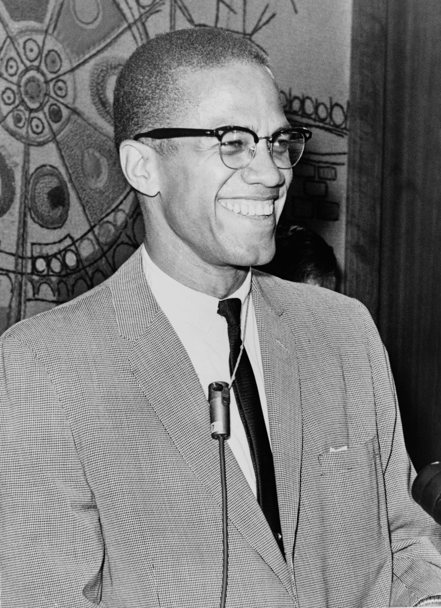

Malcolm X
American Muslim leader

Malcolm X in March 1964
Here's a time line of Malcolm X's life:
- 1925: Malcolm Little is born in Omaha, NE
- 1929: The family’s Lansing, MI, home is burned to the ground.
- 1931: Malcolm’s father is found dead on the town’s trolley tracks.
- 1946: Malcolm is sentenced to 8-10 years for armed robbery; serves 6 years at Charlestown, MA State Prison.
- 1949: Converts to the Nation of Islam while in prison.
- 1953: Changes name from Malcolm Little to Malcolm X and becomes Assistant Minister of Nation of Islam’s Detroit Temple.
- 1954: Promoted to Minister of Nation of Islam’s New York Temple.
- 1958: Marries Sister Betty X in Lansing, Michigan.
- 1959: Travels to Middle East and Africa.
- 1963: Nation of Islam orders Malcolm X to be silent, allegedly because of remarks concerning President Kennedy’s assassination.
- 1964: Malcolm X leaves the Nation of Islam and starts his new organization, Muslim Mosque, Inc.
- 1964: Travels to Middle East and Africa.
- 1964: Starts the Organization of Afro-American Unity (OAAU), a secular political group.
- 1965: Malcolm X’s home is firebombed.
- 1965: Malcolm X is assassinated as he begins speaking at the Audubon Ballroom, New York.